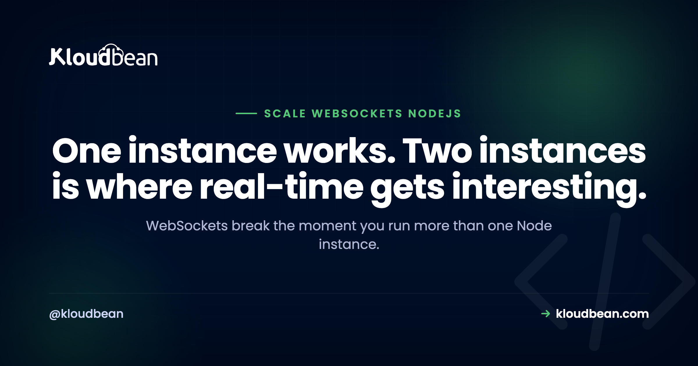

Scaling WebSockets in Node.js: Sticky Sessions and the Redis Adapter

Your chat app works flawlessly in development. You scale to two instances in production and suddenly half your messages vanish, users in the same room can't see each other, and connections drop and reconnect for no obvious reason. Nothing is broken in your code. You've just hit the fundamental problem with scaling WebSockets: connections are stateful and live in one process's memory, while a load balancer assumes requests are interchangeable. Here's what actually goes wrong and the two pieces that fix it.
You need two things. First, sticky sessions at the load balancer, so a client's handshake and its subsequent connection land on the same instance. Second, a Redis pub/sub adapter so instances can broadcast to each other, since a message emitted on instance A must reach sockets held by instance B. With Socket.IO that's @socket.io/redis-adapter. Without both, broadcasting and rooms silently break as soon as you run more than one process.
Why WebSockets don't scale like HTTP requests
A normal HTTP request is stateless and short. Any instance can serve it, which is why load balancing HTTP is easy. A WebSocket is the opposite: a long-lived, stateful TCP connection pinned to one specific process. That process holds the socket object in memory, along with which rooms the client joined and any presence data. Nothing else in your cluster knows about it.
So two problems appear the instant you add a second instance. The connection has to keep talking to the instance that holds it (a routing problem), and any broadcast has to reach sockets on other instances (a messaging problem). Sticky sessions solve the first; the Redis adapter solves the second. You need both, and this is the part people miss, fixing only one leaves you with a subtler version of the same bug.
Problem 1: the handshake lands on the wrong instance
Socket.IO's default transport starts with HTTP long-polling and upgrades to WebSocket. That handshake takes more than one request. If your load balancer round-robins them, request one hits instance A (which creates the session) and request two hits instance B (which has never heard of it). The client gets an error and retries, usually forever. The classic symptom is a console full of failed polling requests and connections that never stabilize.
The fix is sticky sessions, also called session affinity: the load balancer consistently routes a given client to the same backend instance, typically by hashing the client IP or using a cookie. Configure it at the proxy or load balancer layer, not in your app.
Problem 2: broadcasts don't cross instances
Say you have 200 users connected, 100 on each instance. A user on instance A posts a message and you call io.to("room-1").emit("message", data). By default that only reaches sockets instance A knows about, so the 100 users on instance B see nothing. Same for rooms, presence, and any server-initiated push.
The fix is a pub/sub layer that instances use to tell each other about emitted events. Redis is the standard choice: each instance subscribes, and an emit is published so every instance can deliver it to its own local sockets. For Socket.IO, that's a few lines:
import { Server } from "socket.io";
import { createAdapter } from "@socket.io/redis-adapter";
import { createClient } from "redis";
const io = new Server(httpServer);
const pubClient = createClient({ url: process.env.REDIS_URL });
const subClient = pubClient.duplicate();
await Promise.all([pubClient.connect(), subClient.connect()]);
// Now io.to(...).emit(...) reaches sockets on every instance
io.adapter(createAdapter(pubClient, subClient));Note the two clients: Redis pub/sub needs a dedicated subscriber connection, which is why you duplicate the client rather than reusing one. That's a real gotcha worth knowing.
Configuring the proxy for WebSockets
One more layer that quietly breaks things. A reverse proxy needs to be told to allow the HTTP upgrade to a WebSocket, otherwise the connection never establishes. In Nginx that means passing the upgrade headers and using HTTP/1.1:
location /socket.io/ {
proxy_pass http://127.0.0.1:3000;
proxy_http_version 1.1;
proxy_set_header Upgrade $http_upgrade;
proxy_set_header Connection "upgrade";
proxy_set_header Host $host;
proxy_read_timeout 3600s; # don't kill idle connections early
}That proxy_read_timeout matters more than people expect. A default timeout of a minute will disconnect idle WebSocket clients on a schedule, and you'll spend a day chasing "random" disconnects that are really your proxy doing exactly what it was configured to do.
Skipping polling: a partial shortcut
You'll see advice to force the WebSocket transport and skip long-polling, which does sidestep the multi-request handshake problem:
// Client: go straight to WebSocket
const socket = io("https://api.example.com", { transports: ["websocket"] });It genuinely reduces the need for stickiness on the handshake, and it's a reasonable optimization. But be clear about what it doesn't do: it has zero effect on cross-instance broadcasting, so you still need the Redis adapter. And you lose the polling fallback for clients on networks that block WebSockets. I'd treat it as a tuning choice, not the fix.
| Symptom | Cause | Fix |
|---|---|---|
| Connection never establishes, retries forever | Handshake split across instances | Sticky sessions |
| Some users don't get messages | Broadcast doesn't cross instances | Redis pub/sub adapter |
| Rooms and presence look wrong | State only in one process | Redis adapter, external state |
| Connections drop on a timer | Proxy read timeout too low | Raise proxy_read_timeout |
| Upgrade fails behind proxy | Missing upgrade headers | Set Upgrade/Connection headers |
Don't keep state in process memory
The deeper lesson: any real-time state you keep in a JavaScript variable, who's online, room membership, unread counts, is invisible to your other instances and lost on restart. Once you're running more than one process, that state belongs in Redis (or your database) where every instance can see it. Design for that from the start and scaling from one instance to three is a config change instead of a rewrite. Leave it in memory and you'll be debugging phantom presence for weeks.
Why this needs persistent processes
Worth naming plainly: WebSockets want long-lived processes. A connection that stays open for hours is the opposite of a request-scoped serverless function, which is why real-time apps on function platforms end up constrained by execution limits, forced reconnects, and external state requirements. On Kloudbean your Node app runs always-on under PM2 on a real server, so it can hold WebSocket connections normally, and you can launch managed Redis in the same dashboard for the pub/sub adapter, running right next to your app. If you need to spread connections across servers, the built-in Flexible Load Balancer handles the front door. It's the persistent-process setup real-time actually wants.

scaling WebSockets in Node.js, in more depth
Redis is doing the heavy lifting here, so see managed Redis hosting and Redis caching patterns. For the proxy layer, Nginx reverse proxy for Node and cloud load balancer explained cover the front door. On the scaling decision itself, read vertical vs horizontal scaling, and for why functions struggle here, Vercel for Node.js backends.
Real-time needs a real server.
Run always-on Node under PM2 holding WebSocket connections, with managed Redis for pub/sub in the same dashboard right next to your app, and a load balancer in front when you scale out. Flat pricing from $8/mo. Start at kloudbean.com.
Always-on Node under PM2 · Managed Redis · Built-in load balancer · Flat from $8/mo
FAQ
Why do WebSockets break when I scale to multiple instances?
Because a WebSocket is a stateful connection held in one process's memory. A load balancer may send the handshake's requests to different instances, and a broadcast from one instance can't reach sockets on another. You need sticky sessions for routing and a Redis pub/sub adapter for cross-instance messaging.
What are sticky sessions and do I need them?
Sticky sessions (session affinity) make the load balancer route a given client to the same backend instance every time, usually via IP hash or a cookie. You need them when a multi-request handshake or in-process connection state is involved, which is the default with Socket.IO. Configure it at the load balancer, not in your app.
How does the Socket.IO Redis adapter work?
Each instance connects to Redis with a publisher and a dedicated subscriber client. When you emit to a room, the event is published to Redis, every instance receives it, and each delivers it to its own local sockets. That's what makes io.to(room).emit() reach all users regardless of which instance holds their connection.
Can I avoid sticky sessions by forcing the WebSocket transport?
Partly. Setting transports: ["websocket"] on the client skips long-polling and its multi-request handshake, which reduces the need for stickiness. But it doesn't help cross-instance broadcasting at all, so you still need the Redis adapter, and you lose the polling fallback for restrictive networks. Treat it as tuning, not the fix.
Why do my WebSocket connections keep dropping?
A common cause is a reverse proxy timeout. If proxy_read_timeout is short, the proxy closes idle WebSocket connections on a schedule and clients reconnect, looking like random drops. Raise the timeout and make sure the proxy passes the Upgrade and Connection headers with HTTP/1.1 so the upgrade succeeds.
Can I run WebSockets on serverless?
It's possible on some platforms now, but constrained: connections follow function duration and pricing limits, clients must handle reconnects, and rooms, presence, and pub/sub have to live in external storage. Long-lived connections fit a persistent process much better, so a real always-on server is usually the simpler and cheaper home for real-time features.